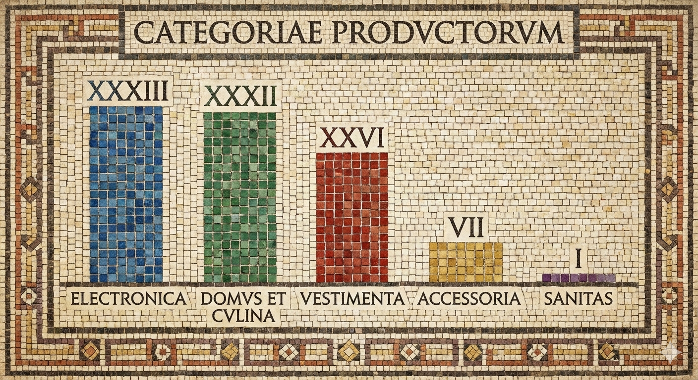
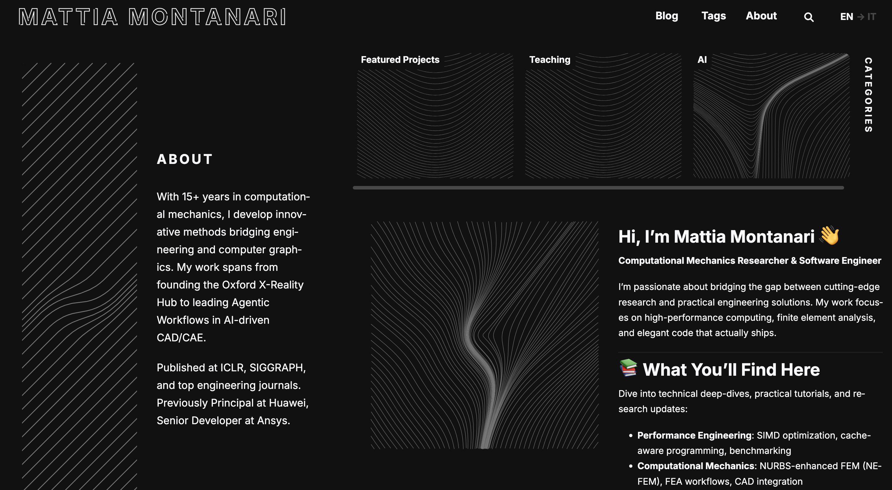

From handwritten notes to working prototypes
Explore equations, data visualisation and a PDF viewer built with Gemini.
Lecture 04Read lecture
Experiment with chart axes
University of Oxford · Digital Capabilities
Small experiments in building with AI.
Explore the ideas, inspect the artifacts, and try the concepts yourself.
The lecture collection

Explore equations, data visualisation and a PDF viewer built with Gemini.

Recover the structure of a legacy flowchart and express it as editable Mermaid code.
Explore how tools, a decision loop and conversation memory extend a language model.

Follow the path from Markdown and templates to a multilingual static website.
Try another term or show the full collection.
“From Prompt to Prototype: A 60 Minute AI Experiment” is a series of unscripted live coding sessions exploring what AI tools can help us build in an hour.
These articles bring together the existing class notes, source code and saved demonstrations. Small learning tools make selected concepts easier to inspect. Transcript-based accounts can follow when transcripts are available.
Explore the original repository ↗